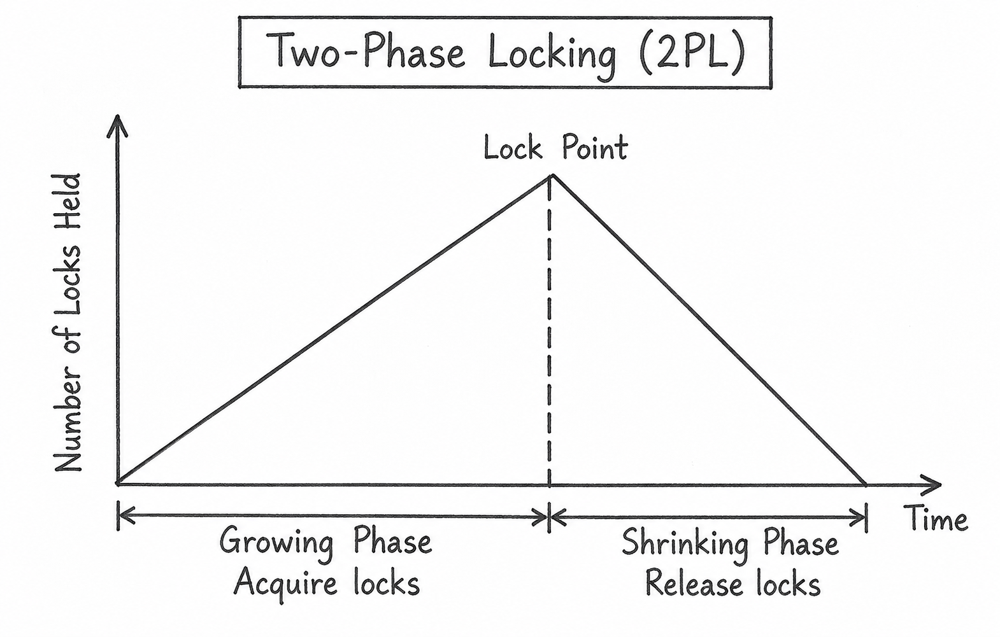

Q20. Describe Lock-Based Concurrency Control and Explain the Two-Phase Locking (2PL) Protocol.
1. Lock-Based Concurrency Control
Lock-Based Concurrency Control is a technique used in DBMS to control multiple transactions accessing the same data at the same time.
It uses locks to prevent transactions from interfering with each other.
There are two types of locks:
a) Shared Lock (S-Lock)
- Used to read data.
- Multiple transactions can hold shared locks on the same data at the same time.
- Other transactions cannot modify the data while shared locks are held.
b) Exclusive Lock (X-Lock)
- Used to read and modify data.
- Only one transaction can hold an exclusive lock on a data item at a time.
- Other transactions cannot read or modify that data until the lock is released.
Example: If Transaction T1 holds an exclusive lock on Account A to update its balance, Transaction T2 must wait until T1 releases the lock before accessing Account A.
2. Two-Phase Locking (2PL) Protocol
Two-Phase Locking (2PL) is a locking protocol that ensures conflict serializability by dividing a transaction into two phases.
a) Growing Phase
- A transaction can acquire new locks.
- It cannot release any locks.
b) Shrinking Phase
- A transaction can release locks.
- It cannot acquire any new locks.

3. Example of Two-Phase Locking
Consider Transaction T1 transferring money from Account A to Account B.
| Step | Operation | Phase |
|---|---|---|
| 1 | Acquire lock on Account A | Growing |
| 2 | Acquire lock on Account B | Growing |
| 3 | Update both account balances | Growing |
| 4 | Release lock on Account A | Shrinking |
| 5 | Release lock on Account B | Shrinking |
Once T1 releases its first lock, it cannot acquire any new locks.
2PL ensures conflict serializability, but deadlocks can still occur.